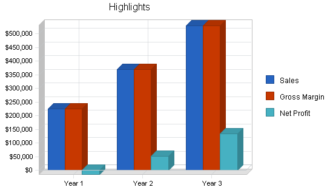

Advertising Agency
Advertising Agency
Our clients
In our experience of working with digital marketing agencies and consultants, attracting new clients can be a much tougher challenge than maintaining relationships with existing ones. This is often because smaller agencies don’t have the resources to hire a dedicated Business Development Manager and existing staff are so involved with providing marketing services for their clients that their own marketing slips down the list of priorities. This isn’t helped by the fact that buying cycles for new B2B clients are getting lengthier and can take as long as seven months. To help tackle this challenge we joined forces with Our Social Times to produce an in-depth white paper, which is free to download, on how to attract and convert new clients. We’ll be looking at this topic in detail over the coming weeks, starting by looking at the methods currently used by agencies to attract new clients.
The most effective offline channels
Although there are a multitude of possible offline and online methods available for attracting new clients – such as social media, advertising, email marketing or content marketing – it seems that recommendations and referrals from contacts and existing clients is perhaps the most effective of all. In a poll we ran during a recent webinar, 90% of agencies claimed to have attracted clients through this method. As Dave Chaffey from Smart Insights suggests, it’s one of the best ways to win business due to the credibility that it affords. A recommendation from a satisfied customer is incredibly powerful as it goes a long way to establishing trust which habitually leads to a quicker conversion time. One happy customer could lead to five more through the power of recommendations. Offline events would also seem to be highly valuable, with 30% of agencies and consultants having gained clients through speaking engagements and tradeshows.
Online channels
 Social media is the trend du jour of online channels, however, many don’t view it as a successful sales channel. Instead, it’s a popular channel for building relationships, awareness raising and, increasingly, lead generation. When it comes to closing those leads, however, email marketing plays a vital role. As our own Tamsin Fox-Davies suggests: “Email is still the most effective way to get sales through a digital channel – and I think that’s been true for a very long time”. This really demonstrates the increasing need for an integrated approach of offline and online techniques. A blended approach to inbound marketing enables you to play to the strengths of each channel and ultimately, convert new clients. (Source from: blogs.constantcontact.com. 1996-2015) read more